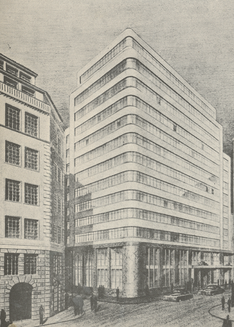

Huellas del Patrimonio

Un recorrido por la memoriaEncuentra los buzones y reúne las diez postales de tu cuaderno de viaje.
Tu cuaderno de viaje
Elige tu perfil o escribe tu nombre para comenzar.
Volver a la exposición
Un recorrido por la memoriaEncuentra los buzones y reúne las diez postales de tu cuaderno de viaje.
Elige tu perfil o escribe tu nombre para comenzar.
Volver a la exposición